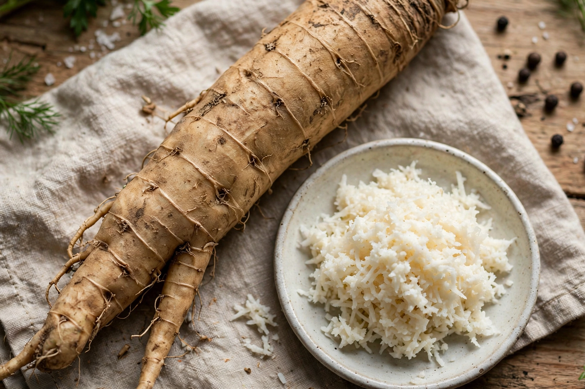

Horseradish

Scientific name: Armoracia rusticana
Family: Brassicaceae
Part used: Root
Horseradish (Armoracia rusticana, syn. Cochlearia armoracia) is a perennial plant of the family Brassicaceae, which also includes mustard, wasabi and cabbage. It is a root vegetable, cultivated for its large, white, tapered root, which has little aroma when intact but releases intense pungent compounds when grated or crushed.
Culinary use
Grated horseradish is mixed with vinegar (and sometimes cream) to make prepared horseradish, a classic accompaniment to roast beef in Britain, to grilled and boiled meats and sausages in Central and Eastern Europe, and — grated fresh and coloured pink — a traditional element of the Jewish Passover seder as maror or within chrain. The pungency comes from allyl isothiocyanate released when cells are damaged, the same class of compound responsible for the heat of mustard and wasabi; much commercial "wasabi" outside Japan is horseradish coloured green. Horseradish sauce also features in Bloody Mary cocktails and seafood cocktail sauces.
Cultivation
The plant probably originated in southeastern Europe and western Asia and has been cultivated since antiquity. It is grown from root cuttings, harvested after the first frosts, and can become invasive in gardens. Major production areas include Illinois in the United States, which styles Collinsville the "Horseradish Capital of the World", and parts of Germany, Hungary and Poland.